The aim of this section is to introduce the Green's function formalism, the concept of self-energy and the set of coupled equations proposed by Hedin whose self-consistent solution, in principle, gives the exact Green's function of the interacting system. We mainly focus on the aspects of the theory that are important for understanding the different steps of the calculation and the role played by the input variables used to control the run. A much more consistent and rigorous introduction to the physical concept of Green's function and self-energy can be found in any standard textbook on Many-Body theory, see for example [1,2,3].
The time-ordered Green's function G(12), also called the propagator, defines the probability amplitude for the propagation of an added or removed electron in a many-body system. Since the probability amplitude is simply given by the overlap between the final and the initial state, G(12) can be expressed as
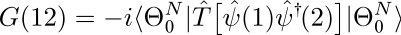
where the matrix element is taken in the Heisenberg representation, T is the time-ordering operator and the creation and annihilation field operators act on the ground state of the N-electron many-body Hamiltonian (the conventions used in the equations are explained in the section on notation). The propagator contains only part of the full information carried by the many-body wave function, but it includes the relevant part for the study of charged excitations. Also, any single-particle operator acting on the system can be evaluated once the Green's function is known.Useful physical information about the charged excitation energies of the many-body system can be obtained by expressing the propagator in the so-called Lehmann representation [1-2-3]. To this purpose it is useful to introduce the following notation to denote the charged excitation energies of the N-electron system[5]:
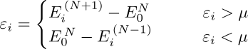
where E0N is the ground state energy of the electron system with N electrons, and i is the set of quantum numbers labeling the excited states with N±1 electrons. Finally, μ is the chemical potential of the system. Other important quantities that will be used in the following are the so-called Lehmann amplitudes defined, in the Schrödinger representation, by


Where the ionisation potential is the energy required to remove an electron from the system, the electron affinity to add an electron, and the chemical potential is typically taken to be in the middle of the gap. For a metallic system these energies are all equal to each other, and there is no gap.
The Dyson equation
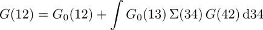
establishes a connection between the fully interacting G and the propagator, G0, of an approximate non-interacting system through a (non-local, non-Hermitian and time dependent) potential called the self-energy, Σ. Since G0 is supposed to be known exactly, the problem of calculating G(12) has now been reduced to the calculation of the self-energy.The self-energy is not a mere mathematical device used in a roundabout way to obtain G but is has a direct physical meaning. The knowledge of the self-energy operator, allows one to describe the quantum-mechanical state of a renormalized electron in the many-body system by solving the quasiparticle (QP) equation[5]:
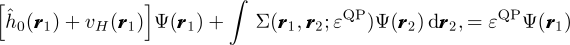
The QP eigenstates so obtained can be used to construct G according to the Lehmann representation. Note that the QP equation departs from the Kohn Sham equation since the QP eigenvectors and eigenvalues do have a direct physical meaning: they can be used to obtain both the charge density of the interacting system and to describe the properties of charged excitations.In 1965 Hedin[6] showed how to derive a set of coupled integro-differential equations whose self-consistent solution, in principle, gives the exact self-energy of the system and therefore the exact G.
The fundamental building blocks employed in the formalism are the irreducible polarizability:
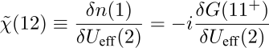
which describes the linear response of the density to changes in the total effective potential (the superposition of the external potential plus the internal classical Hartree potential) and the dynamically screened interaction, W, that is related to the bare Coulomb interaction, v, and to the inverse dielectric function through:

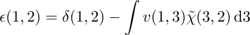
The pentagon sketched in the figure below shows how the various physical quantities are interrelated:

The iteration starts by setting G = G0. Then the set of equations should in principle be iterated until self-consistency in all terms is reached.
The practical solution of Hedin's equations is extremely complicated as they are not just numerical relations but contain a functional derivative in the equation for the vertex. The direct evaluation of the vertex function is very challenging. The set of equations can, however, be iterated assuming that only a few iterations are actually needed to obtain physically meaningful results.
A widely used approach to the approximate solution of Hedin's equations is the so-called GW approximation[6], which consists in approximating the vertex function with a local and instantaneous function:


Thanks to the neglect of vertex corrections, the irreducible polarizability χ(12) is now given by

In real space, the self-energy reduces to a simple direct product of the dressed electron propagator, G(12), and the dynamically screened interaction, W(12):
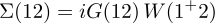
The self-energy, a simple product in the space-time domain, becomes a convolution when expressed in frequency-space: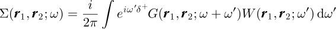
Ideally, the set of GW equations should still be iterated until self-consistency in all terms is reached; this is the fully self-consistent GW method (SCGW). However SCGW calculations for real systems are still very challenging, and very few have been reported in the literature Moreover, the utility of fully SCGW results are still under debate within the scientific community.
The problem is that self-consistency typically improves total energies, but worsens spectral properties (such as band gaps and optical spectra). Since obtaining the spectral information is often the main reason for doing such difficult calculations in the first place, many authors agree that a useful self-consistent approach would need the inclusion of some kind of vertex correction during the solution of the equations.
For this reason, the most common approach employed in the ab initio community consists of using the best available approximation for G and W as a starting point and performing only a single-iteration of the parallelogram (the so-called one-shot GW method, or G0W0). In this case the self-energy is simply given by:


This observation suggests that a simple, albeit accurate, solution for the QP energies can be obtained using first-order perturbation theory, treating the exchange and correlation potential, Vxc, as a zeroth-order approximation to the non-local and energy dependent self-energy [11,12]
Under the assumption that the QP wavefunctions equal the KS orbitals, we can expand the self-energy operator around εKS obtaining a closed expression for εQP :
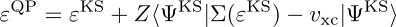
where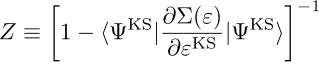
is the so-called renormalization factor. This corresponds to making a Taylor expansion of the self-energy matrix element around the KS energy, as depicted below.

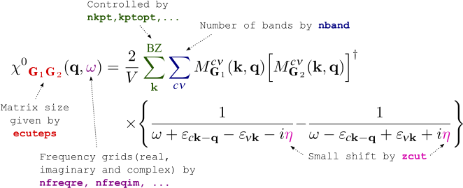
where only the transitions between valence (v) and conduction states (c) contribute (for simplicity we have assumed a semiconductor with time-reversal invariance, the conventions used for the Fourier transform are discussed in the notation section).The number of bands used to compute the polarizability is specified by nband, while zcut gives the small complex shift used to avoid the divergences in the denominators. The frequency mesh is defined by the set of variables nfreqre, nfreqim, freqremax, and freqremin (a number of more exotic grid choices are available through input variables beginning with gw_... or cd_..., e.g. gw_frqim_inzgrid).
M is a shorthand notation to denote the matrix element of a plane wave sandwiched between two wavefunctions (i.e. oscillator matrix elements). The number of planewaves (PW) used to describe the wavefunctions is determined by ecutwfn while the number of G-vectors used to describe the polarizability (i.e. the number of G vectors in the oscillator matrix elements) is determined by ecuteps. The oscillators are ubiquitous in the Many-Body part of ABINIT and their calculation represents one of the most CPU intensive part of the execution. For this reason we devote section 6 to the discussion of some important technical details concerning their computation.
In principle, the set of q-points in the screening matrix is given by all the possible differences between two crystalline momenta of the wavefunctions stored in the KSS file, so it is controlled by the chosen k-point grid. The code, however, exploits the invariance of the two-point function under the action of any symmetry operation of the crystalline space group:

In frequency and reciprocal space, the microscopic dielectric function is related to the irreducible polarizability by the following relation


Note that the equation above differs from

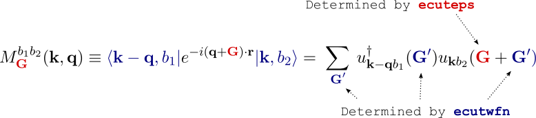
where the k-point belongs to the full Brillouin zone.These terms are evaluated by performing a Fast Fourier Transform (FFT) of the real space product of the two wavefunctions (the second expression in the equation above). Thanks to the FFT algorithm, the CPU-time requirement scales almost linearly with the number of points in the FFT box, moreover the code implements refined algorithms (for instance zero-padded FFTs, FFTW3 interface) to optimize the computation.
There can be a significant speed-up in this component depending on the numerical FFT library used. If possible, it should always be advantageous to link and use the FFTW3 library in GW calculations (controlled by setting fftalg 312). The performance of the various FFT libraries for a given type of calculation can be benchmarked with the fftprof utility.
For a given set of indices (b1, b2, k, q), the calculation of the oscillator is done in four different steps:
Each oscillator thus requires three different FFTs (two transforms to construct the product, one FFT to get M). The number of FFTs can be significantly reduced by precomputing and storing in memory the real space representation of the orbitals at the price of a reasonable increase of the memory allocated. However, for very memory demanding calculations, the real space orbitals can be calculated on the fly with an increase in computational time instead. This option is controlled by the second digit of the input variable gwmem.
The third term in the equation defining the oscillators makes it clear that the product
of the periodic part of the orbitals has non-zero Fourier components in a sphere
whose radius is 2×Rwfn where Rwfn is the radius of
the G-sphere used for the wavefunctions (set by
ecutwfn). To avoid
aliasing errors in the FFT one should therefore use an FFT box that encloses the
sphere with radius 2×Rwfn,
but this leads to a significant increase in the computing effort as well as in the
memory requirements. The input variable
fftgw specifies
how to setup the FFT box for the oscillators and should be used to test how the aliasing
errors affect the final results. The default setting of fftgw 21 is safe, a setting
of fftgw 11 is fast but can be inaccurate, and a setting of fftgw 31 gives
the maximum possible accuracy at a significant computational cost.
The computational effort for the evaluation of the RPA polarizability with the Adler-Wiser expression scales linearly with the number of frequencies computed (nfreqre and nfreqim), albeit with a large prefactor which increases with the fourth power of the number of atoms. The main reason for the linear scaling is that the frequency dependence cannot be factorised out of the sum over transitions, hence a distinct and expensive summation over transitions has to be performed separately for each frequency.
This linear scaling represents a serious problem, especially when many frequencies are wanted, for example when computing QP corrections within the contour deformation technique described in the second lesson of the GW tutorial.
This computational bottleneck can be removed, under certain circumstances, by employing an efficient algorithm proposed in [13] and subsequently revisited in [14], in which only the spectral function
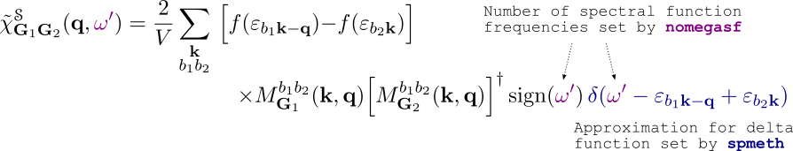
has to be evaluated in terms of electronic transitions between valence and conduction states. The Dirac delta function can be approximated either by means of a triangular function centered at the energy transition following [14] or a gaussian approximant following [13] (see the related input variables spmeth, and spbroad). The spectral function is evaluated on a linear frequency mesh which covers the entire set of transition energies included in the calculation. The number of points in the mesh is given by nomegasf.The evaluation of the spectral function is rather efficient thanks to the presence of the delta-function in the expression above. For example, when spmeth=1, the CPU time required to compute the spectral function on an arbitrarily dense frequency mesh is just twice that required by a single static computation based on the standard Adler-Wiser expression.
The full polarizability is then efficiently retrieved by means of a less expensive frequency integration (a Hilbert transform):
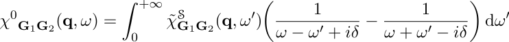
The price to be paid, however, is that a large table for the spectral function
has to be stored in memory and a Hilbert transform has to be performed for each pair
(G1, G2).
Since the computing time required for the transform scales quadratically with the number of
vectors in the polarizability (governed by
ecuteps),
the CPU time spent in this part will overcome the computing time of the standard Adler-Wiser
formalism for large ecuteps.
A theoretical estimate of the crossover point is hard to give because it depends on many
factors. However, if many frequencies are needed, such as for the evaluation of optical spectra,
or accurate contour deformation integrations, or even mapping full grids in the complex plane,
the Hilbert transform method can be significantly faster, and its use is well worth considering.
Following the standard approach, we separate the screened interaction into the static bare Coulomb term and a frequency-dependent contribution according to:

This particular decomposition of W, once inserted in the convolution defining Σ, leads to the split of the self-energy into two different contributions (exchange and correlation):
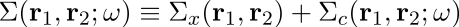
The exchange part is static and turns out to have the same mathematical structure as the Fock operator in Hartree-Fock theory, albeit constructed with quasiparticle amplitudes
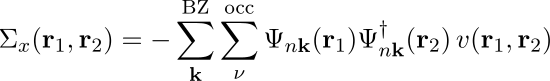
while the dynamic part Σc(ω) accounts for correlation effects beyond Σx.It is important to stress that, for computational efficiency, the code does not compute the full self-energy operator by default. Only its matrix elements for the states specified by kptgw and bdgw are computed and used to obtain the QP corrections.
When expressed in reciprocal space, the diagonal matrix elements of the exchange part are given by:
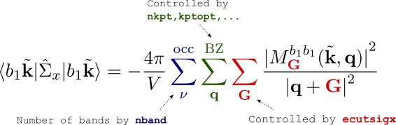
The evaluation of these terms represents a minor fraction of the overall CPU time since only occupied states are involved. However we should always keep in mind that, due to the long range of the bare Coulomb interaction, the convergence with respect to the number of plane waves used in the oscillators M (ecutsigx) is usually slow, much slower than the convergence of the correlation part, which is short-ranged. This plane wave cutoff can be converged independently of others if necessary, and given a much larger value in comparison to ecut, ecutwfn and ecuteps.Another point worth noting is the presence in the expression of the Coulomb singularity for |q+G| → 0. From a mathematical point of view, the integral is well-defined since the singularity is integrable in three-dimensional space once the thermodynamical limit, Nq → ∞, is reached. On the other hand, only a finite number of q-points can be used for practical applications, and a careful numerical treatment is needed to avoid an exceedingly slow convergence with respect to the BZ sampling. To accelerate the convergence in the number of q-points, the code implements several techniques proposed in the literature. We refer to the documentation of icutcoul for a more extensive discussion.
The expression for the matrix elements of the correlation part is instead given by:
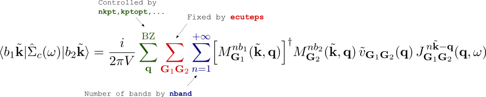
where all dynamical effects are now contained in the frequency convolution integral J.The explicit expression for J depends on the method used to treat the screened interaction. The code implements four different plasmon-pole techniques to model the frequency dependence of W in an efficient but approximate way, alternatively, it is possible to use the more sophisticated frequency integration of the contour deformation method [15] for accurate QP calculations (see the related variables ppmodel and gwcalctyp).
The double sum over G-vectors is performed for all the plane waves contained within a sphere of energy ecuteps (it cannot be larger than the value used to generate the SCR file). For each state, the correlated matrix elements are evaluated on a linear frequency mesh centered around the initial KS energy and the derivative needed for the renormalization factor is obtained numerically (see nomegasrd and omegasrdmax).
Note that here, in contrast to the exchange term, the sum over the band index n should extend up to infinity although in practice only a finite number of states can be used (specified by nband).
Four different plasmon-pole techniques are available in ABINIT and the input variable ppmodel selects the method to be used.
When ppmodel=1,2 the frequency dependence of the inverse dielectric function is modeled according to
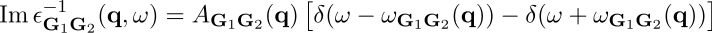
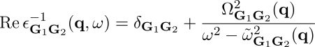
The two models differ in the approach used to compute the parameters. ppmodel=1 derives the parameters such that the inverse dielectric matrix is correctly reproduced at two different explicitly calculated frequencies: the static limit (ω = 0) and an additional imaginary point located at ppmfrq. Unless the user overrides this, the default value is calculated from the average electronic density of the system. The plasmon-pole parameters of ppmodel=2 are calculated so as to reproduce the static limit exactly and to fulfill a generalized frequency sum rule relating the imaginary part of the many-body inverse dielectric matrix to the plasma frequency and the charge density [12]
For a discussion of the models corresponding to ppmodel=3,4 we refer the reader to the original papers cited in the documentation
of the variable.

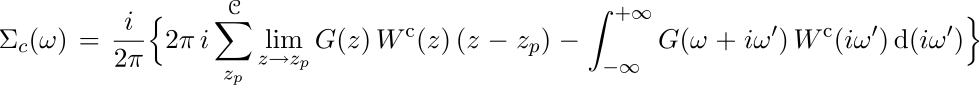
In the above equation, the first sum is restricted to the poles lying inside the path C. Wc(z) represents the frequency dependent part of the screened interaction, whose expression in reciprocal space is given by: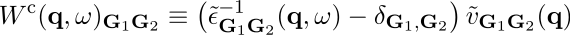
The integration along the imaginary axis is expected to converge quickly with respect to the number of sampled frequencies since the integrand is typically very smooth. Only the residues of the integrand have to be evaluated at the complex poles contributed by the Green's function whose frequency dependence is known.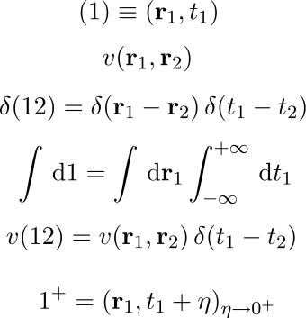
where v(r1,r2) represents the bare Coulomb interaction, and η is a positive infinitesimal.The Fourier transforms for periodic lattice quantities are defined as